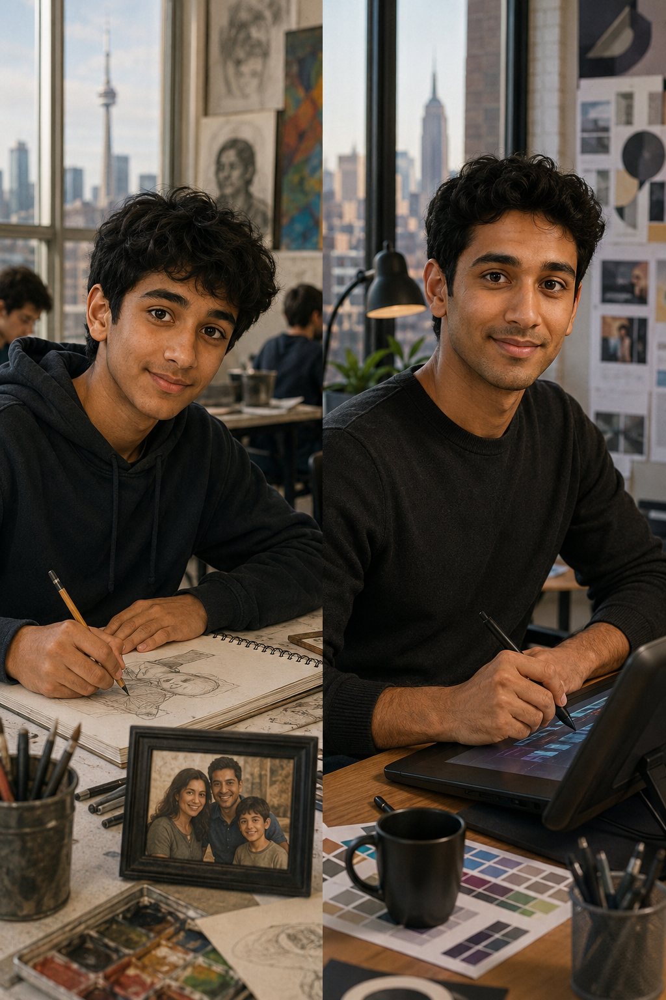

Back then
Where were you? What was life like?
Observe a life story before you read any answers.
A. Look at Maya. Talk with a partner.
| Question | Your idea |
|---|---|
| Where was Maya when she was a child? | |
| Was she in high school before college? | |
| Where was she in 2018? | |
| What do you think she does now? |
B. Write two short “past / now” statements.
Build the core language from a “now → back then” contrast.
| Now | Back then |
|---|---|
| I am in Vancouver. | I was in Toronto in 2018. |
| They are at work. | They were in college. |
| She is an engineer. | She was a student. |
A. Complete with was or were.
2. We in high school together.
3. Maya a college student in 2018.
4. You very young then.
6. He in Toronto last year.
7. They at the same school.
8. It a small class.
B. Make questions with was / were.
| Prompt | Question |
|---|---|
| you / in college? | |
| they / born in Canada? | |
| Maya / at school? | |
| your parents / in Milan? |
C. Answer for you.
Listen for a short conversation about language, school and family.
First listening
Second listening • Complete the profile.
| Person | Detail |
|---|---|
| Bianca • Born in | |
| Bianca • English started at | |
| Bianca • School | |
| Bianca • Languages at school | |
| Mario • Parents born in |
Third listening • Complete with was / were / wasn’t / weren’t.
3. You born in the U.S. 4. You pretty young.
5. My parents born in Milan.
Add a time marker to make your past sentence clear.
when I was 10
at that time
when I was a child
in college
A. Match the idea to a time expression.
| Idea | Time expression |
|---|---|
| 1. a specific year | |
| 2. childhood | |
| 3. a school period | |
| 4. a past point you mentioned |
B. Build four true, adapted or fictional sentences.
Read one short profile and find the past details.
B. Complete.
| Question | Answer |
|---|---|
| How old was Leo in high school? | |
| Where was he? | |
| Was he in college then? | |
| How old was he in an English course? | |
| What language was he learning? |
C. Find and copy one example from the text.
Listen to three short conversations and reconstruct the snapshots.
First listening • Match each dialogue to a picture.
Second listening • Complete each snapshot.
| Dialogue | Snapshot |
|---|---|
| 1 | Year • City • Place • Age |
| 2 | City • Status/place • Country |
| 3 | School • Age 1 • Age 2 |
Third listening • Complete with was / were.
3. The brothers in high school. 4. I 19.
5. you and your brother at the same school?
Prepare a 45–60 second mini-story. Real, adapted and fictional information are all welcome.
Step 1 • Plan your moment.
| Year | Age | ||
|---|---|---|---|
| City / country | School / work | ||
| Family / people | One detail |
Step 2 • Choose useful frames.
In ______, I was in…
When I was ______, I was…
I wasn’t… / We weren’t…
Step 3 • Rehearse.
Step 4 • Share.
Ask one follow-up question: Where were you? or Were you…?
Close the lesson with one accurate sentence and an honest check-in.
A. Complete with was / were / wasn’t / weren’t.
2. My friends in my class.
3. We at school in the morning.
4. your parents born here?
5. I in college when I was 16.
B. Write one sentence about a past moment.
Self-assessment
1 = not yet • 5 = confidently
Complete the language practice. Use was / were carefully.
A. Complete with was or were.
2. She in college.
3. They at the same school.
4. We in a small city.
6. You in my English class.
7. My parents born in Brazil.
8. It a friendly school.
B. Complete with wasn’t or weren’t.
2. They in college.
3. She at work.
5. He 20.
6. You at school yesterday.
C. Complete the questions.
4. your school big? 5. Where your parents then? 6. Maya in Toronto in 2018?
D. Complete with was born or were born.
4. Leo born in Mexico. 5. They born in Canada.
Listen for people, place, time and school details.
E. First listening • Match each person to a picture.
F. Second listening • Complete the profiles.
| Person | City / country | Year | Age | Place / status |
|---|---|---|---|---|
| Olivia | ||||
| Ethan | ||||
| Sofia |
G. Complete with was / were / wasn’t / weren’t.
5. They in Toronto before New York. 6. Olivia in college then. 7. I born in Brazil. 8. My friends at school.
H. Third-person transfer.
5. Sofia in Mexico City before Los Angeles. 6. Their parents born in Brazil. 7. Olivia in high school. 8. They at the same course.
Transfer the language to a new personal profile.

J. Answer the questions.
| Question | Answer |
|---|---|
| How old was Noah in 2015? | |
| Where was he? | |
| Was he alone? | |
| Who was he with? | |
| What was his favorite subject? | |
| Where is he now? |
K. Mark each detail PAST or NOW.
4. He is a graphic designer. 5. Art was his favorite subject.
L. Create a student profile, then write 6–8 sentences.
| Year | Age | City / country | School / work | People | One detail |
|---|---|---|---|---|---|